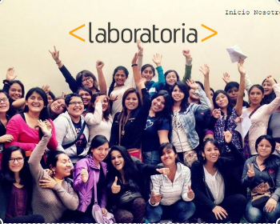
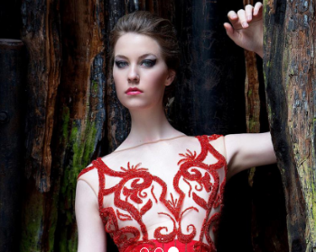
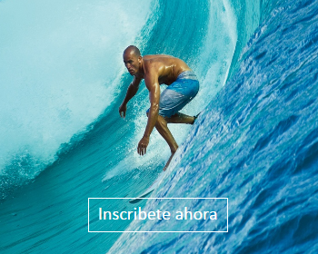

La importancia del posicionamiento del Sitio web en buscadores, siendo el principal Google para la captación de nuevos clientes para su producto o servicio.
Portafolio
Te invito a conocer mis trabajos hechos con mucho amor y esfuerzo, son ellos los que dicen mucho más que mil palabras escritas ¡Disfrútalo!


